When you go to the WordPress Admin page you will the Dashboard where you can create content and change the settings of your WordPress site.
<blogname>.wordpress.com/wp-adminToday we're going to talk about the two basic types of documents that can be created on your site: Pages and Posts.
A page is a simple static page of information that can include HTML markup, text and media.
The best example of a page is the About page, or a Biography page. You may also have a Links page, on FAQ or other single pages depending on your site.
Pages have a custom URL that does not include the date that the page was published:
<blogname>.wordpress.com/about/
<blogname>.wordpress.com/my-biography/Pages are no included in the RSS feed of the blog or recent posts. Navigation widgets that include pages can be added.
A new Page can be created using the Page section of the Dashboard menu:
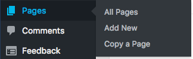This will bring you to the standard WordPress WYSIWYG editor. WYSIWYG stands for What You See Is What You Get which is saying that instead of writing HTML formatting, you can use the style menu buttons to style the text and it will show the result.
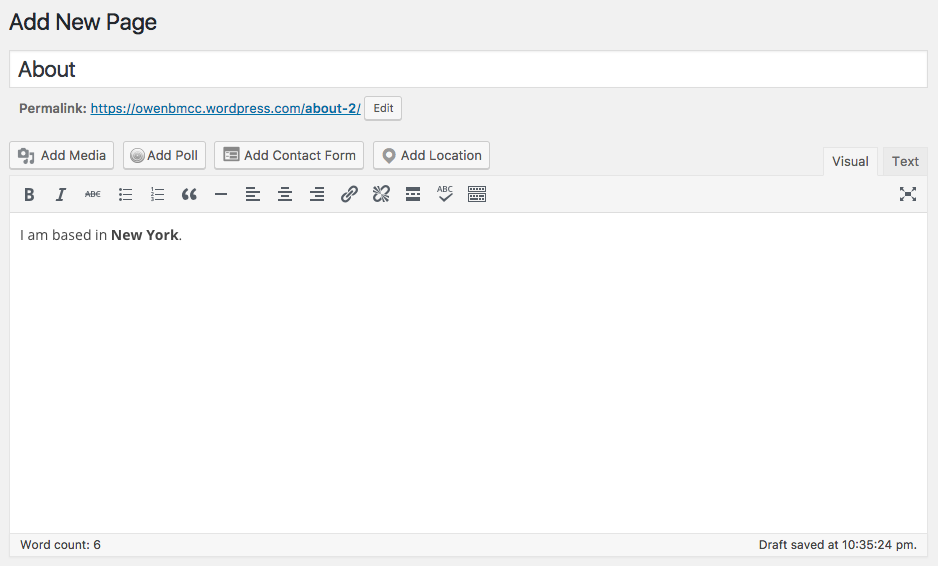You can toggle the Text button to edit HTML:
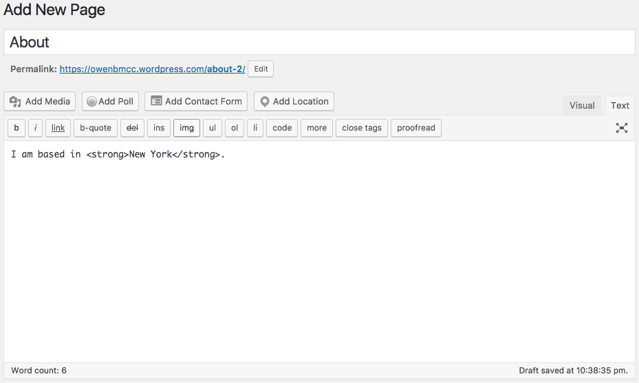Once you have finished editing your page you can make it live using the Publish menu:
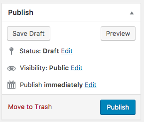The process of writing a post is very similar to the process of a Page, but posts have some key differences.
Posts are entries that are listed in reverse chronological order like a typical blog or Twitter feed. Posts are displayed in the blog's RSS feed and they are dated with the time they were created:
<blogname>.wordpress.com/2017/02/14/my-post/
<blogname>.wordpress.com/2017/02/15/my-work/Add a Post with the Post menu or the Write button:
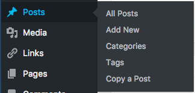 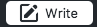Posts can have Categories, which are a useful way to organize and classify your posts.
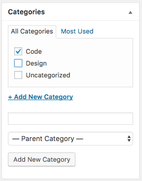Categories should be used to specify large categories within your site. For a blog this might be different posts about things you read vs code you are writing. For a portfolio site this might be categories like "Illustration", "Front end development" or "2D design".
Posts can also have Format, another way to categorize:
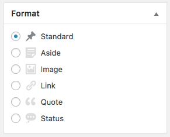Formats describe the type of content in the post, like a video, image, quotation or text.
Posts can also have tags:
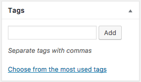Tags can be used to further describe the content of the post based on common themes. You might have a post tagged with "iOS" and "design" and another post tagged with "design" and "CSS".
You can add Media such as images, audio and video into your post using the Add Media button or just dragging onto the Visual editor:
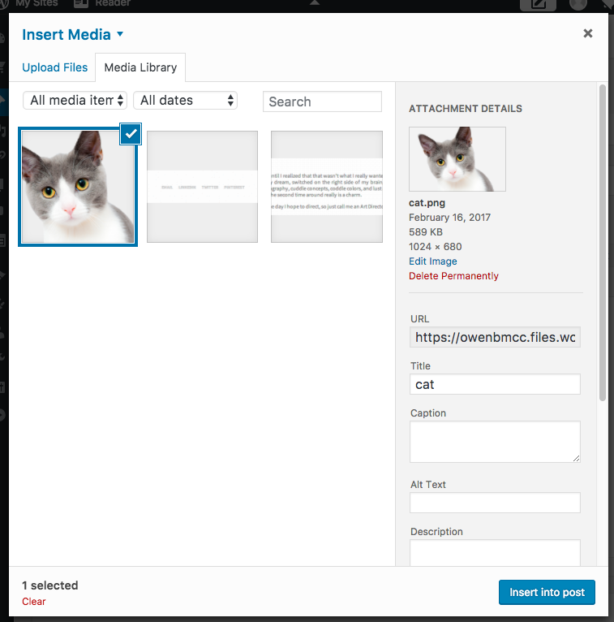You can edit the media with the WYSIWYG editor:
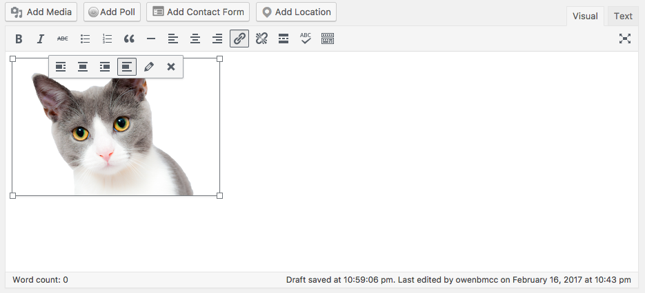External media like YouTube videos can be added by simply copying and pasting a URL into the editor:
Menus are used to organize your content and allow the user to navigate your website.
Menus are found under the Appearance menu:
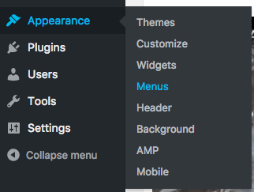You can add Pages, Posts, Custom Links and Categories to the menu:
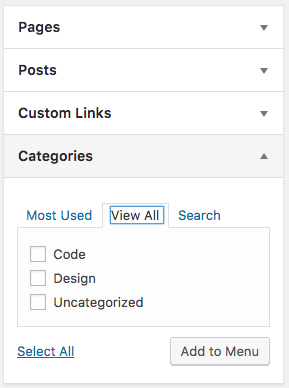Each item will natigate to different types of pages. The Categories page will return a list of Post entries in a specific category.
You can create multiple menus with different links to place in different parts of the sites. Each WordPress theme will give you access to a different set of menus.
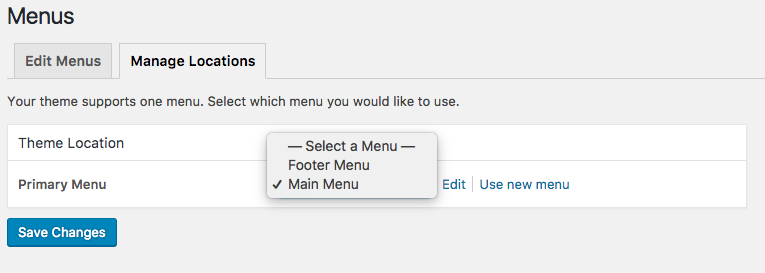When you look at your site map, any page that is on it's own branch should most likely be a Page. Anything that has multiple pages in one branch should be a category with multiple posts.
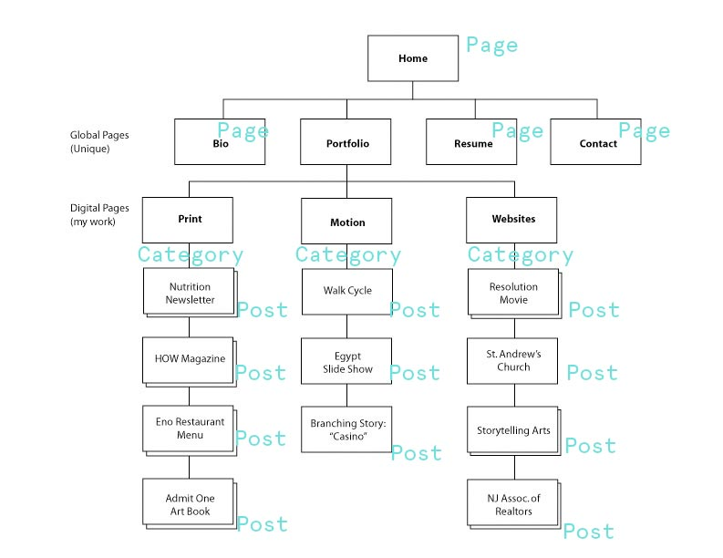